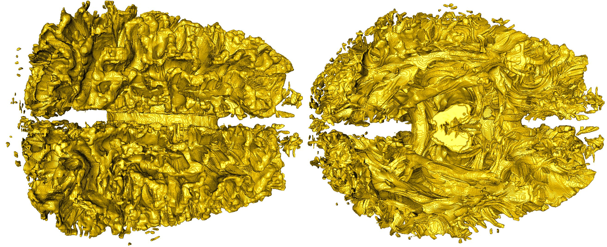

|
Tractography Visualization and Clustering
 Problem OverviewResearchers studying the function and structure of the brain face a difficult imaging and visualization problem due to the complex underlying data. Non-invasive methods, such as Magnetic Resonance Imaging (MRI), have been developed in order to safely generate three-dimensional representations of structural components of the living human brain. Typically, MRI data is used to provide differentiation between various tissue types (grey matter, white matter, and Cerebral Spinal Fluid (CSF)). Diffusion MRI (dMRI) builds on MRI technology to measure the diffusion of water throughout tissue. Since white matter neurons are myelinated, their diffusion characteristics differ substantially from the similar grey matter neurons. Groups of these white matter neurons, or fiber tracts, form the basic connections between distant brain regions. It is believed that studying white matter fiber tracts will enable researchers to better understand the fine structure of the brain leading to a more complete understanding of how it works. While tractography data is clearly useful, the size of this data often makes analysis difficult. A typical tractography data set consists of hundreds of thousands of tracts, and they can sometimes contain much more, even hundreds of millions. Further, each advance in technology allows more and more tracts to be identified. Each individual tract contains multiple line segments, typically around 300. In this research effort we are partnered with Electrical Geodesics, Inc. to find methods of data analysis and visualization that are effective with large scale tractography datasets. The problem with tractography data, then, is two-fold: (1) how to operate on these large data sets? and (2) how to create meaningful results that do not visually overwhelm a medical researcher? Plotting each of the tracts and their line segments on the screen leads to a very complex scene; in the data set described above, there would be 15 line segments for every pixel of a 1000x1000 image. Instead, techniques are needed that make the scale of the data more manageable. Specifically, techniques are needed that make tractography data smaller to operate on while also creating scenes that are morecomprehensible for viewers. ResultsTo address the issues of data size and meaningful representation of tractography data, we developed a novel approach for visualizing tractography data. Previous approaches have utilized clustering based on derived metrics; we built on this approach by taking each cluster and creating a new data set that represents the cluster density. This extension provides significant benefits over previous work. First, the focus on density enables a level of detail approach for adaptively controlling the amount of data displayed. Second, the approach reduces the size of the data, making it easier to work with. Finally, our cluster density representation enables evaluations that were not possible when dealing with tracts. These evaluations help us in two ways: (1) creating a better understanding of the efficacy ofderived metrics that was not previously possible, and (2) allowing our algorithm to choose the best representations of the data. Putting it all together, the contributions of this paper are: (1) a new technique for the visualization of tractography data that reduces its size and provides a level of detail capability and (2) a technique for understanding which derived metrics are most useful for performing clustering. CDUX PeopleExternal Collaborator
Publications
|